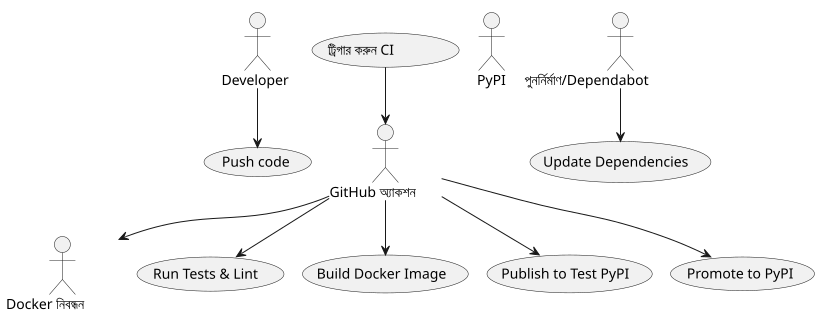
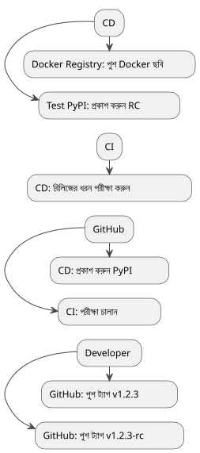
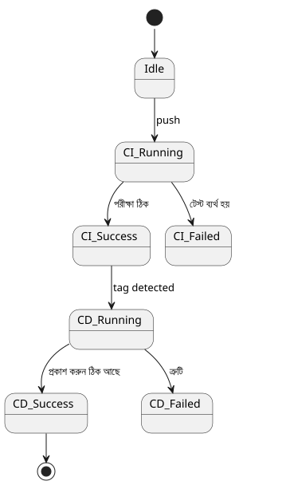
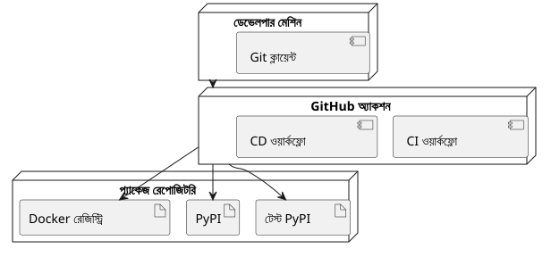

CI/CD Python – অংশ ৩ : Poeetry, Docker ও উন্নত প্রকাশের সাহায্যে আরও অগ্রসর হওয়া
প্রকাশিত: 19 July 2025
এই সিরিজেরデュটি প্রথম অংশে, আমাদের : - একটি পাইথন অ্যাপ্লিকেশনের জন্য গিটহাব একশনস এবং পিপি ব্যবহার করে একটি কার্যকর CI/CD পাইপলাইন তৈরি করুন। - বহুবার্শন টেস্ট, Test PyPI-এর মাধ্যমে পর্যায়ক্রমিক প্রকাশ, এবং গুণমান ও নিরাপত্তা সরঞ্জামসহ এই পাইপলাইনটি শিল্পসীভূত করা হয়েছে।
এই তৃতীয় অংশে, আমরা যাবো।PyPI-এ শুধু প্রকাশের চেয়ে বেশিপূর্ণাঙ্গ, শক্তিশালী ও পেশাদার CI/CD চেইন তৈরি করতে : - কবিতাআধুনিক প্যাকেজিং এবং অপ্টিমাইজ্ড নির্ভরতা ব্যবস্থাপনার জন্য। - Dockerপুনরাবৃত্তিযোগ্য ও বহু-প্ল্যাটফর্ম বিল্ড তৈরি করতে - শর্তসাপেক্ষ প্রকাশrelease candidates-er moto scenarios.byavastha karar jonne - স্বয়ংক্রিয়করণের সরঞ্জাম(Renovate, Dependabot) পাইপালাইনকে আপ-টু-ডেট রাখতে কোনো প্রয়োগ ছাড়াই।
Poetry-এর সাথে ইন্টিগ্রেশন
Poetry প্রাচীন প্যাকেজিং সরঞ্জামগুলো (setup.py, requirements.txt) এর পরিবর্তে করে নির্ভরশীলতা ও বিল্ডের ব্যবস্থাপনাকে কেন্দ্রীয়করণ করে`pyproject.toml`.
Poetry এর ইন্সটলেশন
# Installer Poetry
curl -sSL https://install.python-poetry.org | python3 -
# Vérifier la version
poetry --versionপ্রকল্পের আরম্ভ
# Initialiser un nouveau projet avec Poetry
poetry init
# Suivre l'assistant pour renseigner : nom, version, description, licence, dépendances.এটি একটি ফাইল তৈরি করে`pyproject.toml`:
[tool.poetry]
name = "playlist-downloader"
version = "0.1.0"
description = "CLI tool for managing YouTube playlists"
authors = ["Christophe Hérolivier <cheroliv@example.com>"]
[tool.poetry.dependencies]
python = ">=3.8"
typer = "^0.9.0"
yt-dlp = "^2023.7.6"
google-api-python-client = "^2.0.0"
google-auth-oauthlib = "^1.0.0"
[tool.poetry.group.dev.dependencies]
pytest = "^7.0"
mypy = "^1.0"
bandit = "^1.7"
safety = "^2.3"
black = "^23.0"
ruff = "^0.1"ডিপেন্ডেন্সি যোগ ও ইন্সটলেশন
poetry add typer yt-dlp google-api-python-client google-auth-oauthlib
poetry add --group dev pytest mypy black bandit safety ruffপ্রকাশ সঙ্গে Poetry
কবিতা নেটিভভাবে প্রকাশ পরিচালনা করে:
# Publication sur Test PyPI
poetry publish --build --repository test-pypi
# Publication sur PyPI
poetry publish --buildএটি স্বয়ংক্রিয়ভাবে অন্তর্ভুক্ত থাকা তথ্য ব্যবহার করে।pyproject.toml.
Docker দিয়ে পুনরুত্পাদনযোগ্য বিল্ড
উন্নয়ন, CI/CD এবং উৎপাদনে একই কার্যক্রম নিশ্চিত করতে, Docker Poetrry-এর সাথে পরিপূর্ণভাবে সংযুক্ত হয়।
ডকফাইলের উদাহরণ
FROM python:3.11-slim
WORKDIR /app
COPY pyproject.toml poetry.lock ./
RUN pip install poetry
RUN poetry install --no-root --only main
COPY . .
CMD ["poetry", "run", "python", "cli.py"]এটি নিশ্চিত করে : একটি জমে যাওয়া পাইথন পরিবেশ। নির্ভরতা বন্ধ থেকে`poetry.lock`. - একটি চালনাযোগ্য ইমেজ সব Docker সমর্থনকারী σύστημα ওপর
GitHub Actions-এ একীকরণ
name: Docker Build
on:
push:
branches: [main]
jobs:
build-docker:
runs-on: ubuntu-latest
steps:
- uses: actions/checkout@v4
- name: Build Docker image
run: docker build -t ghcr.io/${{ github.repository }}:latest .
- name: Push Docker image
run: docker push ghcr.io/${{ github.repository }}:latestশর্তসাপেক্ষ প্রকাশ
একটি পেশাগত পাইপলাইনে, কেবল কিছু</tool_call>ে প্রকাশ করতে সক্ষম হওয়া দরকার: রিলিজ ক্যান্ডিডেটস টেস্ট পাইপিআই-এ PyPI-এ স্থিতিশীল সংস্করণ। - ট্রিগারকৃত ডকর বিল্ডগুলো শুধুমাত্র`main`.
- name: Publish to Test PyPI
if: contains(github.ref, '-rc')
run: poetry publish --build --repository test-pypi
- name: Publish to PyPI
if: startsWith(github.ref, 'refs/tags/v')
run: poetry publish --buildএই পদ্ধতিটি আকস்மিক প্রকাশগুলোকে এড়িয়ে যায়।
Renovate ও Dependabot দিয়ে নির্ভরতা স্বয়ংক্রিয়করণ
আপনার নির্ভরতাগুলি মেটা না হওয়ার জন্য স্বয়ংক্রিয় আপডেট সরঞ্জামগুলো যোগ করুন।
ডিপেন্ডাবট
version: 2
updates:
- package-ecosystem: "pip"
directory: "/"
schedule:
interval: "weekly"
- package-ecosystem: "github-actions"
directory: "/"
schedule:
interval: "weekly"Dependabot প্রতিটি সপ্তাহে পাইথন ও GitHub Actions নির্ভরতাগুলো আপডেট করার জন্য PR খুলে।
নবীকরণ করুন
{
"extends": ["config:base"],
"packageRules": [
{
"matchManagers": ["pip"],
"groupName": "python-dependencies",
"schedule": ["before 6am on monday"]
}
]
}Renovate আরও সুনির্দিষ্ট নিয়ন্ত্রণ প্রদান করে: নির্ভরতা গোষ্ঠীকরণ, পরিকল্পনা এবং উন্নত বিধি।
PlantUML ডায়াগ্রাম
ব্যবহার ক্ষেত্র – উন্নত CI/CD

অনুক্রম – শর্তাধীন প্রকাশ

রাজ্য – সিআই/সিডি পাইপলাইন

ডিপ্লয়মেন্ট – আর্কিটেকচার CI/CD

উপসংহার
এই তৃতীয় অংশে, আমরা দেখেছি কীভাবে : - Poetry ব্যবহার করে পাইথন প্যাকেজিংকে আধুনিক করা - ডককারের माध्यमে পুনরোৎপাদনযোগ্য বিল্ড নিশ্চিত করুন। শর্তবদ্ধ প্রকাশ স্থাপন করা - নির্ভরতাগুলির আপডেট স্বয়ংক্রিয়ভাবে করুন
আপনার কাছে এখন একটি CI/CD পাইপলাইন আছে.সম্পূর্ণ, শিল্পীকৃত এবং নিরাপদ, আপনার প্রকল্পের সাথে উন্নতি করতে প্রস্তুত.